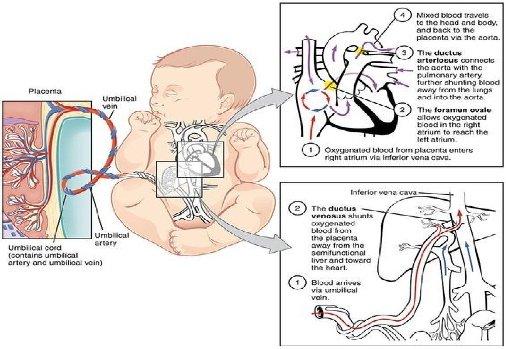
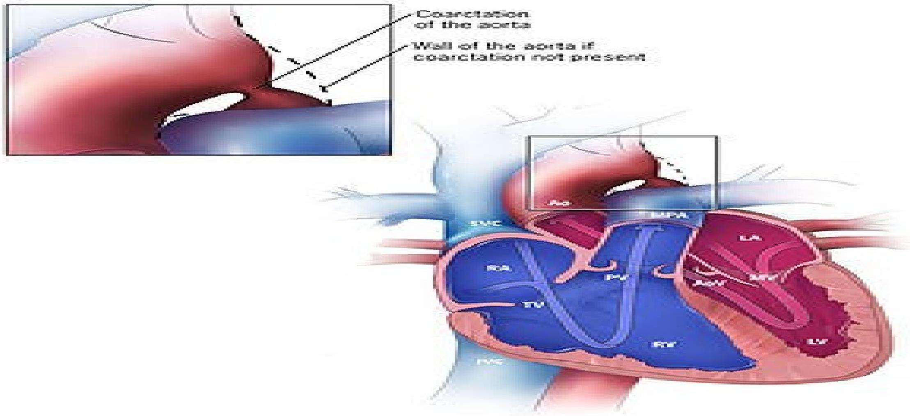

CARDIOVASCULAR DISORDERS
Congenital Heart Disease
These defects occur in approximately 8:1000 live births (American Heart Association, 1999). There are a minimum of 35 types of recognized defects. They range from mild, e.g., patent ductus arteriosus, to complex anomalies, e.g., hypoplastic left heart syndrome, which is a variety of deformities characterized by lack of development of the left ventricle secondary to mitral valve atresia or aortic atresia; the left ventricle becomes small, hypoplastic & not capable of any cardiac function.
An infant may have a combination of defects. The majority of the defects are repaired in the first year of life. More complex defects require staged repairs - more than one surgery is required for final correction. For staged repairs, this can be done in 2-4 years. Mild isolated defects may never require surgery, e.g., slight vulvar incompetence. Because the heart of a child is the size of the child's fist, intracardiac or open heart surgery can be complex.
To support the child during surgery, cardiac pulmonary by-pass (CPB) is implemented. CPB is a treatment used during open heart surgery only, for the repair of many congenital defects as it is a mechanical pump & artificial oxygenator that provides for a short period, substitution of the heart & lungs. Unoxygenated blood is removed via vein cannula & delivery of oxygenated blood back to the heart via aortic cannula. The work of the heart is performed by the bypass pump. Let's now start by discussing some congenital heart conditions.
Patent Ductus Arteriosus (PDA)
Patent ductus Arteriosus (PDA) is a direct connection between the main pulmonary artery & aorta. In the fetus, the ductus arteriosus is needed for survival. In preterm infants, a PDA is a common feature depending on developmental maturity. In term newborns, the ductus begins to close within 12 hours & is closed by 2-3 weeks. Thereafter, it is called PDA if not closed. When this ductus arteriosus does not close, oxygenated blood from the aorta flows to the pulmonary artery, mixing with the deoxygenated blood there. A large PDA will result in heart failure with all its complications.
It is twice as common in female babies as in males (ratio 2:1). Reasons for its occurrence are unclear. In most cases, the diagnosis may not be made until the child is three to four years old, when the heart murmur may be detected on a routine medical check up.
Clinical manifestations
Depend on size of shunt. For small PDA it may be asymptomatic. For large PDA signs of congestive heart failure may be present, e.g., tachycardia, diaphoresis, edema, decreased pulses, wheezing, orthopnea, ascites, decreased urine output, exercise intolerance and poor weight gain.
Diagnostic evaluation
Auscultation reveals murmurs in the lower left clavicle. Echocardiogram studies structures & motion of the heart sound waves are studied. A transducer enables recording of waves on a strip chart.
Therapeutic management
NSAIDS e.g., indomethacin is given as it inhibits synthesis of prostaglandins which are responsible for a number of cellular connections. It maintains potency of the ductus arteriosus in premature infants. Surgical closure for term symptomatic (CHF) infants if indomethacin is not effective here. Prognosis is usually good.
Tetralogy of Fallot
Is a rare condition cause by a combination of four heart defects that are present at birth. They are:
- Ventricular septal defect (VSD) - abnormal connection between the right and left ventricles. The defect can be located in various positions along the septum. Very common congenital heart defect comprising of 20% overall. Small VSD (75-80%) close in 2 years.
- Pulmonary stenosis - Narrowing of pulmonary valve and obstruction to blood flow from the right ventricle to the lungs. Obstruction can be at the valve (valvular), just before pulmonary valve itself (subvalvular), or above the valve (supravalvular), varying places along the pulmonary artery.
- Right ventricle hypertrophy - due to resistance to pumping blood through the pulmonary artery which is stenosed/ narrowed.
- The aorta overrides the ventricular septal defect (VSD) but this is of little clinical significance but part of these anatomical features of this defect. (the overriding aorta allows blood from both ventricles to enter the aorta.)
Incidence
Most common cyanotic defect accounting for approximately 10% of all congenital heart disease.
Clinical manifestations
Depend on degree of pulmonary stenosis. Varying degree of cyanosis. Loud systolic murmur is noted at birth. Hypercyanotic episodes called "tet spells" (suddenly develop deep blue skin, nail and lips after crying or feeding or when agitated) occur due to some activity e.g. crying, feeding and defecating.
Diagnostic evaluation
Boot-shaped heart caused by hypertrophy of right ventricle is observed on x-ray. Echo- cardiogram demonstrates clinical features of TOF & is the best diagnostic tool.
Risk factors
A viral infection during pregnancy, such as rubella (german measles), alcoholism during pregnancy, poor nutrition during pregnancy, a mother older than 40 years, a parent who has tetralogy of fallot, the presence of down syndrome or DiGeorge syndrome.
Therapeutic management
Surgical correction. Manage hypercyanotic symptoms i.e., hyper spell - place infant in knee-chest position. For older children they can squat. This decreases systemic venous return of unoxygenated blood and increases systemic vascular resistance in the hope of decreasing the right-to-left shunt, allowing blood to flow to the lungs. Oxygen therapy. Phenylephrine is used to decrease vascular resistance. Surgical repair at 6-12 months to widen right ventricular outflow tract & close VSD. There are some possible complications: residual VSD leaking, pulmonary regurgitation, arrhythmias, decreased cardiac output, cardiac failure and sudden death.
Aortic Stenosis
A congenital aortic stenosis is the narrowing of the aortic semi-lunar valve caused by an obstructive lesion. This hinders the normal blood flow from the left ventricle to the aorta. It is more common in male babies than the female. The thickening of the semilunar valves results in stenosis.
Pathophysiology
The aortic stenosis causes over-dilation of the left ventricle and back flow of blood to the left atrium via the mitral valve. The backpressure is further extended to the pulmonary veins resulting in pulmonary vascular congestion.
Clinical manifestations
- Growth failure in severe cases but could be normal in mild cases.
- Cardiomegaly, more marked on the left side of the heart.
- The patient is fatigued due to exercise intolerance.
- Dizziness and fainting may occur.
- Pulmonary oedema may be experienced, chest pain and cardiac murmur.
Management
The management of the condition entails surgical intervention by an operation called valvotomy, which is a method of dividing the fused flaps of the valve. Prosthesis may be required in some cases (valve replacement). Open heart surgery is undertaken so that the valve can be seen directly. Post-operative management is best carried out in the intensive care unit with the appropriate equipment.
Coarctation of the Aorta
Coarctation, also called aortic narrowing, is a congenital condition where the aorta is narrow, usually in the area where the ductus arteriosus inserts. The word "coarctation" means narrowing. Coarctations are most common in the aortic arch. The arch may be small in babies with coarctations. Other heart defects may also occur with coarctation, typically occurring on the left side of the heart. When a patient has a coarctation, the left ventricle has to work harder. Since the aorta is narrowed, the left ventricle must generate a much higher pressure than normal in order to force enough blood through the aorta to deliver blood to the lower parts of the body.
Below is a sketch showing alternative locations of coarctation of the aorta:
- A. DUCTAL COARCTATION.
- B. PRE-DUCTAL COARCTATION
- C. POST-DUCTAL COARCTATION.
Clinical manifestation
- In mild cases, the child might not show any signs/symptoms and the diagnosis may not be confirmed until later in life.
- When symptoms are present, they include: difficulty in breathing, poor appetite or trouble feeding, failure to thrive.
- Later on, children may develop symptoms related to problems with blood flow and an enlarged heart.
- They may experience dizziness and shortness of breath, faint or near fainting episodes, chest pain, abnormal tiredness and fatigue, headaches or nosebleeds.
- Have cold legs and feet. They have pain in their legs with exercise (intermittent claudication).
- Arterial hypertension in the arms with low blood pressure in lower extremities is classic.
- In lower extremities, weak pulses in the femoral arteries and arteries of the feet are found.
Treatment
Treatment is conservative if asymptomatic, but may require surgical resection of the narrow segment if there is arterial hypertension. In some cases angioplasty is performed to dilate the narrowed artery. For fetuses at high risk for developing coarctation, a novel experimental treatment approach is being investigated, wherein the mother inhales 45% of oxygen three times a day beyond 34 weeks of gestation. The oxygen is transferred via the placenta to the fetus and results in dilation of the fetal lung vessels. As a consequence, the flow of blood through the fetal circulatory system increases, including that through the underdeveloped arch.
Acquired Heart Disease
Rheumatic Heart Disease
Acute rheumatic fever, which occurs most often in school age children, may develop after an episode of group A streptococcal pharyngitis. The exact pathogenesis of ARF is unknown. Generally, it's thought to be an autoimmune response to untreated group A streptococci. The autoimmune response specifically affects the heart, CNS, and joints. In the heart it causes pericarditis, myocarditis, and valvulitis. Valvulitis usually affects the mitral valve. Valvulitis is responsible for mitral regurgitation. The aortic valve can also be affected and develop insufficiency. However, aortic insufficiency without mitral regurgitation is uncommon in ARF. Myocarditis & pericarditis in isolation shouldn't be considered rheumatic in origin because they are never encountered in the fever without valvular involvement.
Polyarthritis of ankles, knees, hips, shoulders. This unlike other forms of arthritis doesn't result in permanent disability. Central nervous system manifestations present late, even years after the initial illness. Inflammation changes in the CNS result in chorea (Sydenham's chorea) which is featured by involuntary, purposeless movements of extremities. Prompt treatment of "strep" throat with antibiotics can prevent the development of rheumatic fever. The streptococcus is spread by direct contact with oral or respiratory secretions. Although the bacteria are the causative agents, malnutrition, overcrowding, poor hygiene and low socioeconomic status may predispose individuals to rheumatic fever.
Clinical features
- The child complains of headache, vomiting, moderate fever, furred tongue, sweating and occasionally constipation. These are signs of emerging toxemia. Pulse rate is elevated, corresponding to temperature.
- Manifestation of valvulitis is the most significant feature - with mitral regurgitation (systolic murmur) and aortic insufficiency (diastolic murmur).
- Others include: Polyarthritis that is migratory i.e. moves from one joint to the next. It presents with tenderness, pain, swelling, heat, limited movement on affected joints.
- Erythema marginatum i.e. a distinctive, fine, pink rash noted on the trunk & extremities (Never on face), pronounced with heat. It is seen with carditis/ polyarthritis. The subcutaneous nodules are firm, painless over the extensor surfaces of the elbows, knees & wrists. These always occur with carditis, never in isolation.
Diagnostic evaluation
Use clinical manifestation, Lab studies - gp A streptococcal infection through culture but throat culture might be -ve since the child might have recovered by the time the fever is suspected. Asymptomatic children might be carriers of strept hence +ve culture may result. Blood tests are also good to test strept infection i.e. antistreptolysin o-titer (ASO). Echocardiogram: Good for valvular disease e.g. mitral regurgitation. Echo should be obtained for any child suspected of having rheumatic fever because mitral regurgitation & aortic insufficiency might be silent.
Therapeutic management
The aim of treatment in the acute phase is to eradicate the organism and decrease the inflammation process. Use oral penicillin as the initial treatment. Aspirin - anti-inflammatory because polyarthritis is not responsive to ibuprofen/ acetaminophen. After the acute phase, ASA should be administered with antacids because of ASA gastric effects. Bed rest is required till inflammation resolves. Restrict activities because of aortic insufficiency/ mitral regurgitation.
Secondary prophylaxis
Oral penicillin 250 mg BID or a monthly IM injection of penicillin. This is done for at least 10 years or more. It's important because of recurrence which can induce severe cardiac damage. Compliance is very difficult as many clients feel it's not necessary to continue the treatment. Aortic and mitral valve replacement may be required in adulthood.
Nursing management aspects
Unless there is severe heart failure, acute rheumatic fever is managed as an outpatient. Timely identification is vital for recurrence prevention. Throat infection treated timely & full dose taken to avoid under treatment. Vigilance for signs and symptoms of the disease. Follow up is vital.
Heart Failure
Heart failure in childhood is usually acute but may later become chronic, if not dealt with effectively and promptly. Heart failure is commonly caused by anaemia, pulmonary diseases and/or inflammatory lesions of the heart, which can cause carditis. Acute heart failure in children needs to be recognised early and treated immediately in order to preserve life. The very young may collapse within hours or days, whereas the older children might fight for their lives for several weeks or months before the condition becomes serious.
Left-Sided Failure
The left side of the heart is responsible for receiving oxygen-rich blood from the lungs and pumping it forward to the systemic circulation (rest of the body except the pulmonary circulation). Failure of the left side of the heart causes blood to back up into the lungs, causing respiratory symptoms as well as fatigue due to insufficient supply of oxygen. Common signs are increased breathing rates, rales and crackles, pulmonary edema (fluid in the alveoli), cyanosis, laterally displaced apex beat, heart murmurs, dyspnea, orthopnea.
Right-Sided Failure
Is often due to pulmonary heart disease (cor pulmonale), which is usually caused by difficulties of the pulmonary circulation, such as pulmonic stenosis. Presents with; edema, ascites, and liver enlargement, jugular venous pressure, jaundice and also coagulopathy may occur.
Signs and symptoms
- Cyanosis and pallor of the mucous membranes
- The infant may become dyspnoeic with rapid respiration
- Sweating and tachycardia.
- A persistent cough accompanies breathlessness and this leads to production of thick viscid secretion, which may block the airway if not sucked out immediately
- The infant becomes restless and irritable and often throws their arms above the head in an attempt to improve respiration
- Difficulties in feeding, which is often slow and rarely completed
- The infant tends to put on weight in spite of refusal to feed. This weight gain is brought about by the fluid retention, which results in oedema
- Abdominal distension and vomiting may be present
- Jugular venous distension is marked if congenital cardiac failure is developing
- Tachycardia
- Hepatomegaly
Treatment
Digoxin (Lanoxin)
This is given according to body weight. The most recommended dosage is an initial digitalizing dose in the first 24 hours of 0.1 mg/kg body weight. The first dose is half the total, followed by a second dose, which is a quarter of the total, followed by a third dose, which is a quarter of the second or the previous total. A maintenance dose of 0.02 mg/kg body weight in 24 hours is recommended.
Frusemide (Lasix)
A quick acting diuretic is given to facilitate excretion of urine. The recommended dose is 0.5 mg/kg body weight IM. Then 2 mg/kg body weight orally. Due to rapid fluid and potassium depletion when this drug is used, extra potassium should be administered on a daily basis.
Morphine Sulphate
This is commonly given to older children to sedate the patient and to reduce metabolism. The recommended dose is 0.2 mg/kg body weight six hourly when necessary.
Chloral Hydrate
This mixture is a relatively useful sedative for the restless, anxious older child to ensure rest is maintained.
Antibiotics
These are also administered as a prophylactic measure to guard against infections.